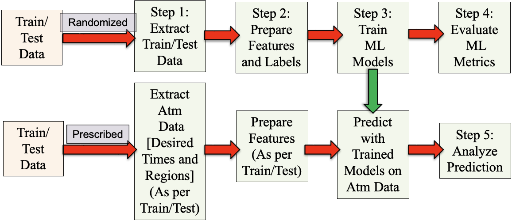
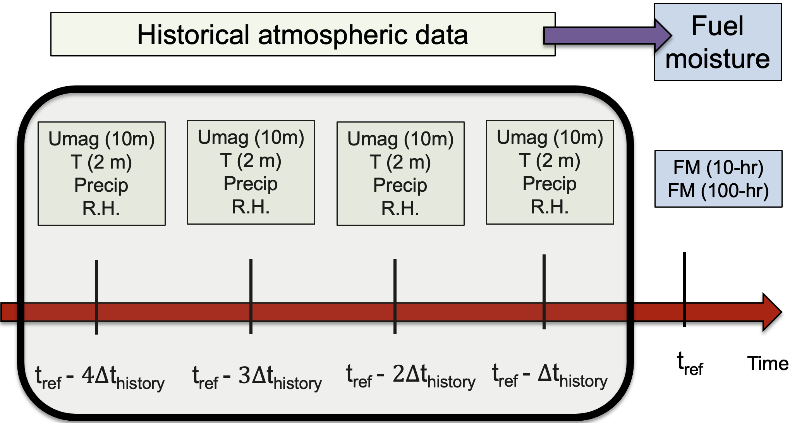
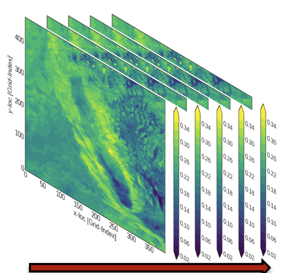
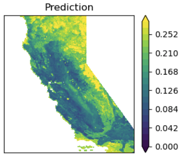

Machine Learning Automation Pipeline (MLAP)¶
MLAP is a software framework for predicting wildfire fuel moisture (FM) from historical atmospheric conditions. It provides a computationally cheap alternative to transport-based methods, making it practical to assess many scenarios rather than a handful.
Accurate FM prediction matters because fuel moisture governs ignition risk, rate of spread, and the potential for a fire to intensify — which in turn drives planning and protection decisions for wildlands, populations, and infrastructure.
Every stage is driven by a JSON input file, so large parametric studies can be run and interpreted without hand-editing code.
The pipeline¶

The stages of MLAP. The upper path trains on randomized data; the lower path applies a trained model to prescribed data to produce fuel maps.
| Step | Purpose | Guide |
|---|---|---|
| 1 | Extract a subsampled training set from 21 years of raw data | Extract Data |
| 2 | Build features and labels for regression or classification | Prepare Data |
| 3 | Train ML models and compute metrics | Train Models |
| 4 | Compare many models across many datasets | Evaluate Models |
| 5 | Predict FM at a chosen time and region | Analyze and Predict |
New users should start with Installation, then work through the steps in order. The JSON Reference documents every input parameter in one searchable place.
How the prediction is framed¶
FM at a reference time \(t_{ref}\) and location \((x, y)\) is related to the
time history of atmospheric quantities preceding it. Two parameters define that
history: max_history_to_consider (\(t_{max\_history}\), how far back to look)
and history_interval (\(t_{history}\), how often to sample within that window).

MLAP relates instantaneous FM at \(t_{ref}\) to the history of atmospheric parameters back to \(t_{max\_history}\), sampled every \(t_{history}\).
For example, with \(t_{max\_history} = 48\) hours and \(t_{history} = 4\) hours, atmospheric data are taken at \(t_{ref}-4, t_{ref}-8, \ldots, t_{ref}-48\).
The work focuses on 10-hour dead fuel moisture, which is the most widely measured category and correlates well with overall wildfire potential. The 1-hour, 100-hour, and 1000-hour categories can be studied the same way.
Source data¶
Training data is an hourly FM and atmospheric reanalysis product covering California and parts of Nevada at 3 km spatial and 1 hour temporal resolution, spanning 2000–2020 (21 years).
It is the output of a fuel moisture data assimilation system combining a coupled atmosphere–fire model with observations from Remote Automatic Weather Stations (Farguell et al., 2024).

Historical atmospheric data for California, 2000–2020. Each slice is one hour; the red arrow is time and the color bar shows FM.
What you get out¶
The end product is a fuel map at a chosen time and region, produced by applying a trained model to prescribed data.

A fuel map obtained from a trained ML model at a prescribed time over a prescribed region.
Predictions are not limited to the training domain. A trained model can be applied to weather data outside the temporal and spatial range it was trained on — including forecasts and other climate scenarios — provided the required atmospheric variables are available and mapped in the extract step.
Scientific results¶
The Science with MLAP section documents what the simulations show: how prediction accuracy responds to data sampling, history parameters, ML hyperparameters, and the choice of physical quantities.
Design assessment¶
Independently reviewed — 8/10 for automation design
MLAP's naming conventions exist to keep large parametric studies interpretable long after they are run. An independent review tested that claim directly: given 594 MB of accumulated output and no access to the machine that produced it, could every number be traced back to the configuration that generated it?
- ~8,600 output files across 27 evaluation collections — every artifact traceable to its dataset, label, and model from filenames alone
- Two independently assembled collections cross-validated — dataset 41 reports an identical R² of 0.8906 in both, agreement that was not designed in
- Fourteen parameter studies existing only as output, never written up, were recovered in full — including the largest hyperparameter effect in the assessment
Project, repository, and authorship¶
MLAP is developed by Pankaj K. Jha at Lawrence Livermore National Laboratory (LLNL).
| Author | Pankaj K. Jha |
| Institution | Lawrence Livermore National Laboratory (LLNL) |
| Main repository | https://github.com/LLNL/MLAP |
| Documentation site | [Not yet live] https://software.llnl.gov/MLAP/ |
| Development mirror | [Live and up-to-date] https://pkjha-aero.github.io/Wildfire_ML/ |
| Release ID | LLNL-CODE-2001016 |
| Release title | Machine Learning Automation Pipeline (MLAP), v 1.0 |
| License | MIT |
| Contact | pankaj.psu@gmail.com (primary), jha3@llnl.gov |
Two documentation URLs
software.llnl.gov/MLAP is the canonical home. LLNL serves its GitHub
Pages under that domain, so llnl.github.io/MLAP redirects there. It is
not yet live — GitHub Pages has still to be enabled on the main
repository, which needs organisation-level access.
pkjha-aero.github.io/Wildfire_ML is the author's development mirror,
built from the same sources. It is live and current, and is where the
documentation can be read today.
Sponsorship
This work was performed under the auspices of the U.S. Department of Energy by Lawrence Livermore National Laboratory under Contract DE-AC52-07NA27344 and was supported by the LLNL-LDRD Program under Project No. 22-SI-008.